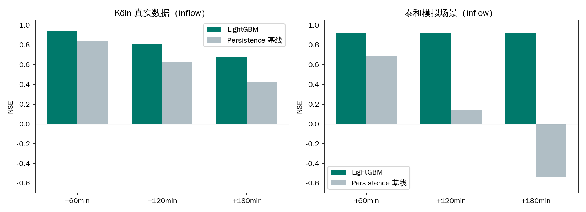
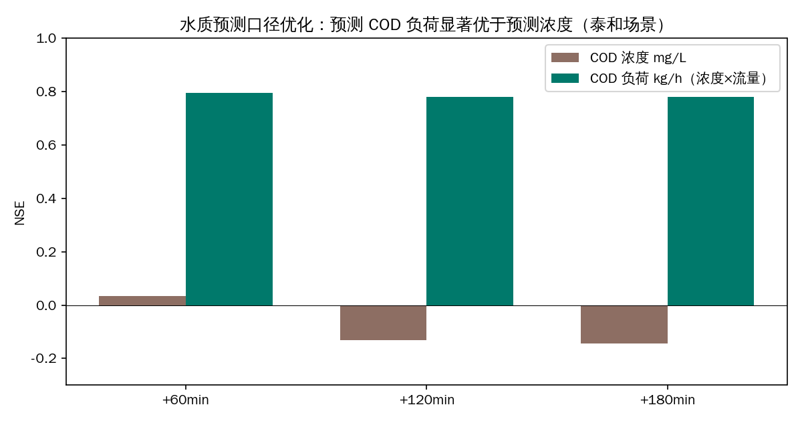

项目概览
面向泰和污水厂系统（26 座上游泵站，合计设计能力 40.5 m³/s），构建以污水厂为调控核心的"厂前"水量水质超前感知与协同预警框架：融合管网液位、泵站运行、在线水质与降雨驱动，实现进厂流量与 COD/氨氮负荷的 1~3 小时超前预测，驱动四级预警与泵群协同调控，并以概化 SWMM 物理模型在环验证调度策略。

四层数据战略：破解「无泰和真值」困境
- 官方静态骨架：组委会 Date1 泰和污水厂 + 26 泵站配泵能力、服务片区与拓扑；
- 真实外部驱动：上海市水务局「水情信息」52 站 10 分钟级雨量/水位（2021–2025，约 1150 万行）；
- 国际真实代理：Köln-Weiden 厂-网-雨、Graz、BSM2 等 17 类公开数据集（约 280MB），为方法有效性提供真实数据背书；
- 物理概化模拟增广：真实降雨驱动的旱天双峰 + RDII + 输送延迟 + 初期冲刷 + 雨天稀释 + 毒性冲击事件。
全部来源与许可登记于数据目录查看 DATA_CATALOG.md →


超前预测：真实数据背书 + 概率区间 + 多模型对标






雨预报输入实验（+2h）
| 输入模式 | NSE | 黄色事件召回 | 橙色事件召回 |
|---|---|---|---|
| 无雨预报 | 0.922 | 69% | 25% |
| 含噪短临雨预报（σ=0.3） | 0.949 | 100% | 100% |
| 理想雨预报（上限） | 0.956 | 100% | 100% |
结论：接入气象短临降雨预报是实用化第一优先级接口，收益已量化。
四级预警与协同调控效益

| 预警级 | 触发条件（占设计能力） | 协同调控建议 |
|---|---|---|
| 🔵 蓝色 | ≥70% | 加强监视、复核仪表 |
| 🟡 黄色 | ≥85% | 雨前预抽空前池/管段调蓄 |
| 🟠 橙色 | ≥95% | 总站错峰开泵 30~60min |
| 🔴 红色 | ≥110% | 上游限流 70% + 调蓄拦截 |
效益推算（模拟场景）：预抽空可腾容积 ≈ 4.4 万 m³，测试段橙色超阈体积全部可拦截；污染冲击异常分类链路打通（模拟冲击测试段 P/R/F1=1.0，首报延迟 0min）。
极端场景压力测试

| 场景 | 基准训练 NSE | 洪峰相对误差 | +P5/P50 增广后 |
|---|---|---|---|
| P=100a 设计暴雨 | 0.134 | −94% | NSE 0.935 / 峰值误差 −28% |
| 台风烟花（2021 实况雨） | 0.705 | −5%~−23% | 0.701 / −4%~−21% |
结论：纯数据驱动模型对远超训练分布的极端暴雨系统性低估洪峰；设计暴雨增广是低成本高收益的工程手段，残留低估由物理模型与雨预报协同弥补。
SWMM 在环滚动优化调度：削峰—冒溢权衡

| 策略 | 峰值入流 m³/s | 超阈历时 | 超阈体积 | 前池冒溢 |
|---|---|---|---|---|
| 无调控（泵常开） | 5.80 | 5.6 h | 2.09 万m³ | 19.73 万m³ |
| 本地液位规则 | 5.80 | 4.9 h | 1.76 万m³ | 20.38 万m³ |
| 预见性滚动调度（稳健） | 5.80 | 4.6 h | 1.50 万m³（−28%） | 19.73 万m³（不增） |
| 预见性滚动调度（激进限排） | 4.99 | 2.8 h | 0.22 万m³（−89%） | 20.95 万m³（+6.2%） |
预见性策略三段逻辑：雨前预抽空 → 峰中错峰限排 → 峰后恢复排空。削峰—冒溢权衡前沿可供运行方按受纳水体敏感性选择运行点。
数字孪生演示看板（DEMO 加分项）
Streamlit 交互看板以「厂网数字孪生一张图」组织为四个页签，全部随侧栏提前量（60/120/180min）与查看时刻联动：
- ① 超前感知总览：实时指标卡 + 主图（P10–P90 不确定性带 + 四级阈值）+ 液位/水质/泵站面板，预警触发自动弹出调控建议；
- ② 厂网一张图：43 节点/42 管段拓扑，节点颜色随查看时刻联动显示液位热度，6 泵站开泵状态卡；
- ③ 暴雨事件复盘：选暴雨日回放「感知→预测→预警」全过程，自动统计首次预警提前量；
- ④ 调控策略对比：SWMM 四策略厂前入流曲线 + 削峰—冒溢权衡指标表。
本地运行：pip install -r requirements.txt 后执行 streamlit run deliverables/demo/app.py（源码见下载区源码包）。

可复现工程
仓库含 7 项单元测试（模拟器质量守恒 / 雨型峰位 / 特征无泄漏 / 预警阈值 / SWMM 构建等）、GitHub Actions CI 与 requirements-lock.txt 依赖锁定。最小复现链路：
pip install -r requirements.txt python -m pytest tests -q # 单元测试 python -m src.data.shanghai_rain # ① 官方雨量数据融合 python -m src.simulation.generate --days 92 ... # ② 实测降雨驱动场景 python -m src.models.forecast --dataset taihe # ③ 超前预测 python -m src.control.warning # ④ 四级预警 python -m src.swmm.build_inp && python -m src.control.rolling_opt # ⑤ SWMM 在环调度 streamlit run deliverables/demo/app.py # ⑥ 数字孪生看板
资源下载中心
完整项目源码仓库：github.com/dao-genesis/meec8-topic7（私有，团队成员可访问）· 本站源码：meec8-topic7-site
诚实性与合规声明
- 泰和厂-网时序数据为「官方静态骨架 + 上海实测降雨驱动」的物理概化模拟，非泰和实测；
- 方法有效性以 Köln-Weiden 等国际真实厂-网-雨公开数据集背书；
- SWMM 模型为概化参数（未经泰和实测率定），调度结论价值在于策略间相对比较而非绝对数值；
- 预警调控效益为模拟场景推算，非现场实测效益；雨预报实验为理想/含噪构造输入，非业务预报实测性能；
- 异常分类结果基于模拟冲击事件（测试段仅 1 次），仅证明链路可行性；
- 全部数据来源与许可登记于 DATA_CATALOG.md。